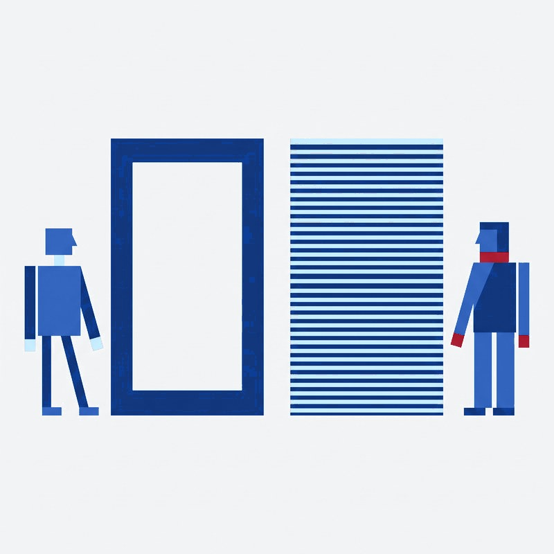
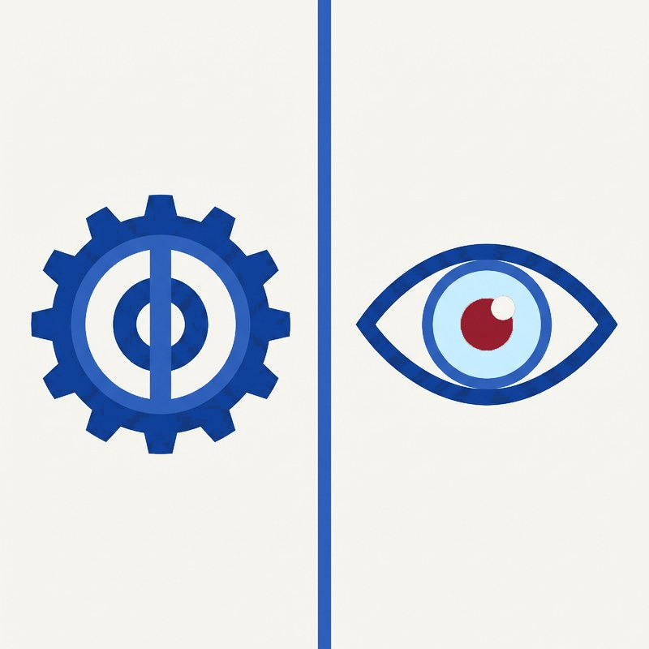
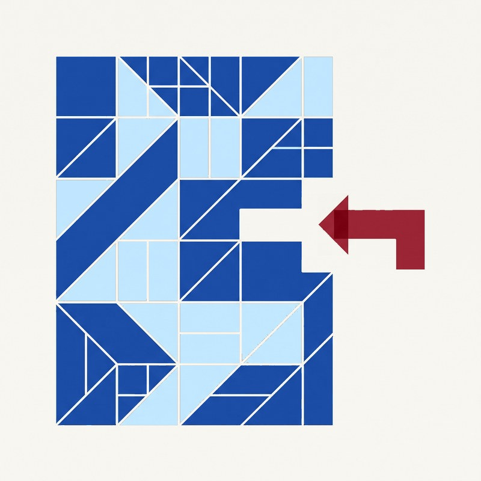

KLARTEXT
KLARTEXT — Kursbeschreibungen barrierefrei prüfen.
Ein KI-gestützter Prüfschritt vor der Veröffentlichung.
ABSCHLUSSPROJEKT · CHANGE UND KI
CIMDATA · HENRIK HEIL · JULI 2026
Ein KI-gestützter Prüfschritt vor der Veröffentlichung.
Die Kursbeschreibungen entstehen in acht Programmbereichen und erscheinen unverändert im Portal, im Programmheft und im Newsletter. Einfache Sprache bietet das Haus an — für Betrieb und Kursgeschäft, nicht für die Kurstexte selbst.

Volkshochschule Frankfurt am Main, gegründet 1890. Laut Betriebssatzung stehen die Angebote grundsätzlich allen offen, ohne Rücksicht auf Vorbildung.

Stichprobe von 60 Kursbeschreibungen aus sieben Programmbereichen, gezogen über die offene Schnittstelle des Kursportals am 28.07.2026. 90 Prozent haben mindestens einen Befund, nur 6 von 60 blieben ohne. Der längste gemessene Satz hat 74 Wörter.
| Kurs | Ø Satzlänge | längster Satz | Zielgruppe liest Deutsch |
|---|---|---|---|
| Englisch A1.1 | 21,3 Wörter | 41 Wörter | + fließend |
| DaF Deutsch 4 A2.2 | 10,6 Wörter | 16 Wörter | ! erst auf A1-Niveau |

Digitale Barrierefreiheit heißt: Websites müssen so gebaut sein, dass auch Menschen mit Behinderung sie nutzen können. Der Maßstab sind die WCAG mit den Stufen A, AA und AAA.
Für die vhs gilt weder die EU-Richtlinie noch das Barrierefreiheitsstärkungsgesetz direkt. Als kommunale Einrichtung in Hessen greift Landesrecht: § 14 HessBGG und die BITV HE. Gefordert ist Stufe AA — nicht die BITV 2.0 des Bundes, der häufigste Zitierfehler kommunaler Stellen.
Pflicht auf AA: Struktur (1.3.1), Seitentitel (2.4.2), Sprache von Textteilen (3.1.2). Nicht Pflicht: Abkürzungen erklärt (3.1.4) und Leseniveau der Zielgruppe (3.1.5), beides Stufe AAA. Nicht Teil der AA-Konformität heißt aber nicht belanglos: § 3 Abs. 1 BITV HE verlangt eigenständig, dass Angebote verständlich sind.

| Baustein | Was darin steht |
|---|---|
| ROLLE | Redaktionsassistenz der vhs. Liest wie eine erfahrene Lektorin, entscheidet nichts. |
| AUFGABE | Zielgruppe des Kurses bestimmen, dann prüfen, ob sie den Text verstehen kann. |
| FORMAT | Feste Ausgabe: Zielgruppe, Befunde mit Zitat, Grund und Vorschlag, Zusammenfassung. |
| GRENZEN | ! Bewertet Texte, niemals Personen. Ändert nichts, veröffentlicht nichts, erfindet nichts. |
| KONTEXT | Acht Programmbereiche, Hausabkürzungen, sechs Prüfregeln, 820 Wörter des Goethe-Zertifikats A1. |
| REGELN | Namen entfernen, wörtlich zitieren, höchstens fünfzehn Befunde, Pflicht vor Empfehlung. |
Kurs 4074-74, DaF Deutsch 4 A2.2. Der Prompt bestimmt die Zielgruppe selbst: liest Deutsch auf A1.


Die Ausgangsmessung liegt vor, erhoben mit einem Skript. Die Nachmessung läuft mit demselben Skript — für die Erfolgskontrolle muss nichts Neues aufgebaut werden.
| Kennzahl | heute | Ziel nach 3 Monaten | gemessen mit |
|---|---|---|---|
| Texte mit mindestens einem Befund | 90 % | ! unter 40 % | demselben Skript wie die Ausgangsmessung |
| Neue Texte im Pilotbereich geprüft | 0 | + alle | Protokoll des Werkzeugs |
| DaF-Texte mit C1-Vokabular | 9 von 13 | ! höchstens 2 von 13 | Nachmessung, identisches Verfahren |


Ich zeige das Werkzeug jetzt live. Danach freue ich mich auf eure Fragen.